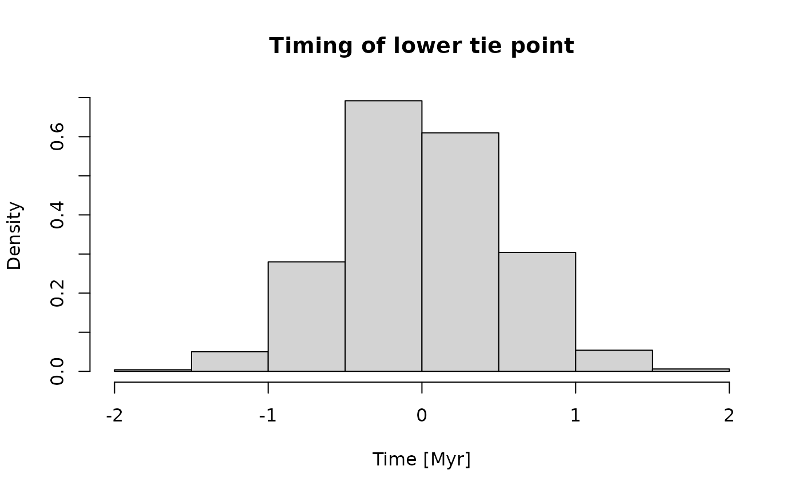
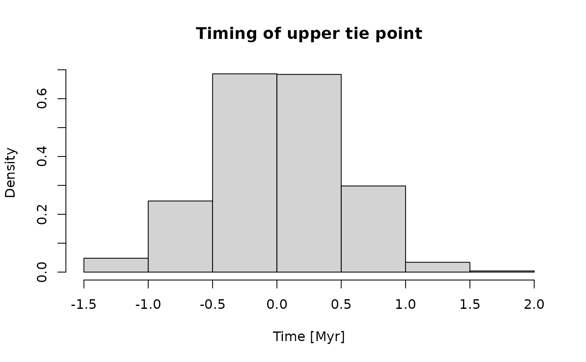
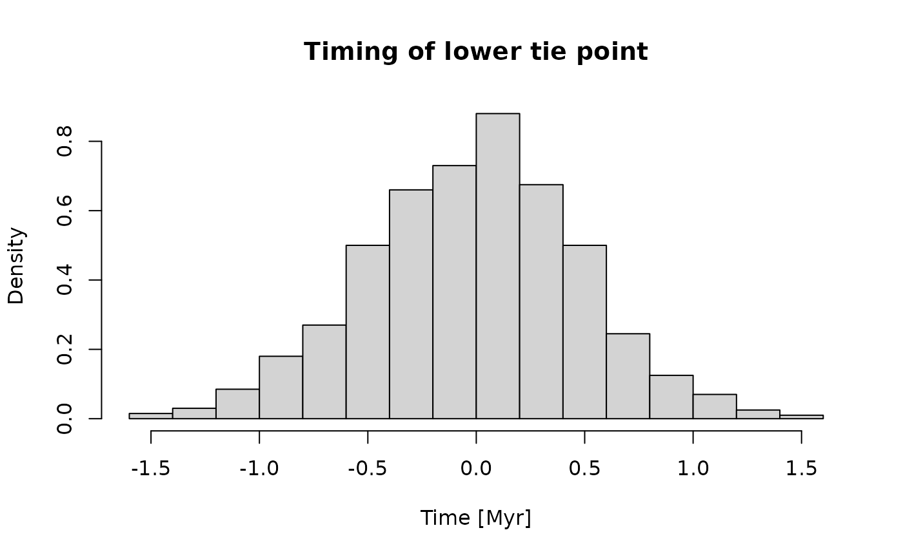

Estimating Age-Depth Models from Tracer Contents of Rocks and Sediments
Niklas Hohmann
Source:vignettes/adm_from_trace_cont.Rmd
adm_from_trace_cont.RmdIntroduction
This vignette gives an example on how to estimate age-depth models
(ADMs) from tracer contents of rocks and sediments using the function
strat_cont_to_multiadm. The function takes the following
inputs:
h_tp: a function that returns stratigraphic height of the tie pointst_tp: a function that returns times of the tie pointsstrat_cont_gen: a function that returns tracer contents observed in the section, outcrop, or drillcoretime_cont_gen: a function that returns how tracer input into the sediment changed with timeh: vector of heights where the ADMs are estimatedno_of_rep: integer, number of age-depth models determined
Idea
Assume there is a tracer embedded in rocks or sediment (e.g. Pollen, extraterrestrial 3He, etc.). In addition, there some information on the temporal variations of the tracer available. Then the tracer values measure in the sediment can be compared to the assumed input flux of the tracer to construct rates of sediment accumulation, from which an age-depth model can be constructed.
A standard example is when tracer input into the sediment is constant. The high tracer values reflect low rates of sediment accumulation, which is equivalent to a low gradient of the age-depth model.
This idea is formalized using the idea of stratigraphic content and time content: Stratigraphic content is the tracer value measured in the section (units tracer per length unit), and time content is the input of tracer into the sediment (units tracer per time unit).
Coding tie points
Times and heights of tie points are coded via the functions
t_tp (timing) and h_tp (height) that take no
inputs. They serve as wrappers around user-defined procedures that
reflect uncertainties around tie points. Every time t_tp
and h_tp are evaluated, they return possible values for the
tie points. Writing these functions requires some effort, but it allows
the user to hand over arbitrarily complex uncertainties of the tie
points to the strat_cont_to_multiadm function.
The function for the heights of the tie points must return an ordered vector of tie point heights.
For this example, I assume the stratigraphic positions of the tie points are known without uncertainty, and are at 10 and 20 m stratigraphic height.
h_min = 10 # stratigraphic height of lower tie point [m]
h_max = 20 # stratigraphic height of upper tie point [m]h_tp is then implemented as follows:
When evaluated, this function returns the stratigraphic positions of the tie points:
h_tp()
#> [1] 10 20The function for the timing of the tie points must return a vector of strictly increasing values corresponding to the times of the tie points.
For this example, I assume that the timing of the first tie point
follows a normal distribution with mean 0 and standard deviation 0.5.
For the second tie point, only maximum and minimum time is available.
Due to the lack of information, I assume a uniform distribution between
the minimum (9) and the maximum (11). This is implemented as follows in
t_tp:
t_tp = function() {
# timing first tie point
t1 = rnorm(n = 1, mean = 0, sd = 0.5)
# timing second tie point
t2 = runif(n = 1, min = 9, max = 11)
return(c(t1, t2))
}Using Myr as time unit, the distribution of times for the tie points is as follows:

Coding stratigraphic data
Both stratigraphic contents and age contents must be coded as function factories, i.e., functions that return functions. They must be able to take vector inputs and return a vector of the same length as output.
I assume the tracer input into the sediment is constant with time. This is implemented with the following function:
time_cont_gen = function(){
time_cont = approxfun(x = c(0,10), y = c(1,1), rule = 2)
return(time_cont)
}To visualize this, let’s plot this from time 0 to 10:
# generate one function from time_cont_gen
time_cont = time_cont_gen()
# time where to evaluate the function
t = seq(0,10,by = 0.1)
plot(x = t,
y = time_cont(t),
type = "l",
xlab = "Time [Myr]",
ylab = "Tracer Input into the Sediment [1/Myr]")
The implementation of the tracer values can be simplified using the
helper functions flux_const, flux_linear,
flux_quad that are wrappers that define constant, linear,
and quadratic changes of tracer flux with time.
For the tracer measured in the section, I assume it was measured at the bottom, middle, and top of the examined section:
At these locations, tracer values each follow a normal distribution with mean 10, 1, and 8 and standard deviations 1, 0.1, and 0.2.
mean_vals = c("mu_1" = 10, "mu_2" = 1, "mu_3" = 8)
sd_vals = c("sig_1" = 1, "sig_2" = 0.1, "sig_3" = 0.8)I assume that between the measured points, tracer values change linearly. With these assumptions and values, the function factory for the tracer can be coded as follows
strat_cont_gen = function(){
loc = locations
trac_vals = rnorm(n = length(mean_vals),
mean = mean_vals,
sd = sd_vals)
strat_cont = approxfun(x = loc,
y = trac_vals,
yleft = trac_vals[1],
yright = trac_vals[3])
return(strat_cont)
}To visualize this, here are 3 possible scenarios of how tracer values change in the section:
n = 3 # number of sampled tracer values
h = seq(h_min, h_max, by = 0.1) # determine age-depth model every 0.1 m
plot(NULL,
xlim = c(h_min, h_max),
ylim = c(0, max(mean_vals) +2 * max(sd_vals)),
xlab = "Stratigraphic Height [m]",
ylab = "Measured Tracer [1/m]")
cols = c("red", "blue", "black")
for (i in seq_len(n)){
strat_cont = strat_cont_gen()
lines(x = h,
y = strat_cont(h),
col = cols[i])
}
Estimating the age-depth model
With all the input data coded, age-depth models can be estimated
using the function strat_cont_to_multiadm. Here, I
determine the age-depth models every 0.25 m, and generate 10 ADMs
h = seq(h_min,h_max, by = 0.25) # strat. positions where ADMs are estimated
no_of_rep = 1000 # no. of ADMs estimated
my_adm = strat_cont_to_multiadm(h_tp = h_tp,
t_tp = t_tp,
strat_cont_gen = strat_cont_gen,
time_cont_gen = time_cont_gen,
h = h,
no_of_rep = no_of_rep,
T_unit = "m",
L_unit = "Myr")The estimated age-depth model can be handed to plot to display it:
plot(my_adm, mode = "envelope")
T_axis_lab() # plot time axis label, see ?T_axis_lab for details
L_axis_lab() # plot length axis label, see ?L_axis_lab for details
make_legend() # make legend
Further information
For information on estimating age-depth models from sedimentation rates, see
vignette("adm_from_sedrate")See also
For a simplified application see
- Jarochowska, E., Nohl, T., Grohganz, M., Hohmann, N., Vandenbroucke, T. R. A., & Munnecke, A. (2020). Reconstructing depositional rates and their effect on paleoenvironmental proxies: The case of the Lau Carbon Isotope Excursion in Gotland, Sweden. Paleoceanography and Paleoclimatology, 35, e2020PA003979. DOI: 10.1029/2020PA003979